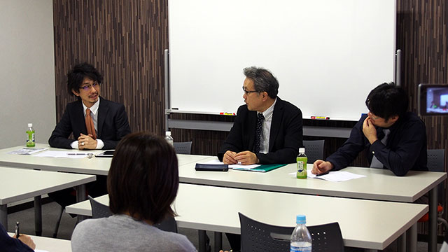
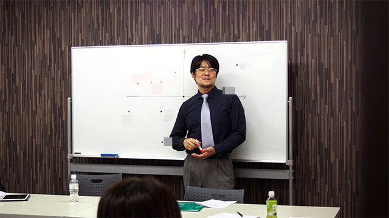

ズバリお買得の高校は？
今月も熱心な保護者の方々と共に月イチお話し会を開催しました。
なんと今回は上記のようなタイトルです。
先月には大盛況にて終了した私立高校説明会もありましたから、そこで話しきれなかった事柄を裏話的に話すという意味合いもあり、大いに盛り上がりました。
前半の話題は、主に「高校受験というものをどう位置付けるか」という内容。
ここは所長の管野が熱弁をふるいました。
子どもたちにとって１５歳という年齢（思春期）は、大人の仲間入りを果たす通過儀礼を経験するような年齢でした。
ちょうど心身ともに大きく変化するときなので、ここである種の試練を乗り越えたという経験をすることで、精神的にも飛躍します。
ところが現代では皆さんがご存知の通り、自ら生計を立てたり親元を離れるということがもっと先の年齢になって初めて経験するケースが多いわけです。
精神的に最もたくましく飛躍するこの思春期において、壁を乗り越えるという通過儀礼を経験できることがあるとすれば、それが現代では高校受験なのではないか、という主旨です。
確かに教育現場で実際に私たちが目にする思春期の子どもたちの成長は著しいものがあります。
私たちが安易に親主導で私立中学受験をすることに否定的である理由の一つは、まさに成長著しい思春期においてエスカレーター式に附属の高校へ進学できてしまうことにもあるのです。
もちろん高校受験の意味合いや位置づけについて、家庭ごとの理念や考え方もあると思いますから、これらの話のエッセンスをそこに付け加えていただいて、お子さんへの接し方に役立ててもらえれば…ということです。
後半は具体的な高校を見ていく視点についてです。
庄本と私が、公立高校と私立高校それぞれにおいて「どのような基準で学校を選ぶべきか」という項目を具体的に挙げていきました。
例えば「コース（特進クラス・普通クラスなどに分かれている場合）によって、面倒見の手厚さに違いがない」など、学校の実名や具体的エピソードを交えて語っていきました。
（※かなりの本音トークで、その場だけでしか言えないまさに裏話なども飛び交いましたが、このブログでは割愛させていただきます）。
最後に、教育研究所ARCS独自（独断？）の見解に基づいた「高校マトリックス」という座標平面（横軸：学習面などの介入度／縦軸：学校の努力方向が良いかどうか）に、近隣の高校や私立高校説明会で紹介した都内の高校をマッピングしていきました。
これを見れば、自ずと自分の子どもの性格に照らし合わせてオススメの学校がわかるようになっているのです。

これは参加された保護者にも好評で、非常に参考になったとのご意見をいただきました。
ちょっと盛り上がりすぎて時間を数十分延長してしまいましたが…私たちも楽しく充実したお話会でした。
今後も多くの方のご参加、ぜひお待ちしています！